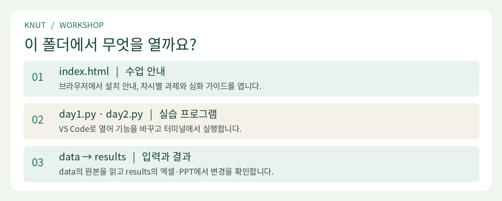

문의 한 건에서 분기 보고까지.엑셀 데이터를 읽고, Python으로 업무 기능을 만듭니다.
기준일과 대기 일수를 바꾸며 미회신 목록을 비교하세요.
분기를 바꾸면 증가액이 가장 큰 부서와 기여 사업을 보여줍니다.
엑셀을 읽는 기존 프로그램에 업무 기능을 추가합니다. 처음 참여하면 설치부터, 복습할 때는 필요한 장부터 시작하세요.

프로젝트를 복제하면 아래 파일도 함께 받습니다.